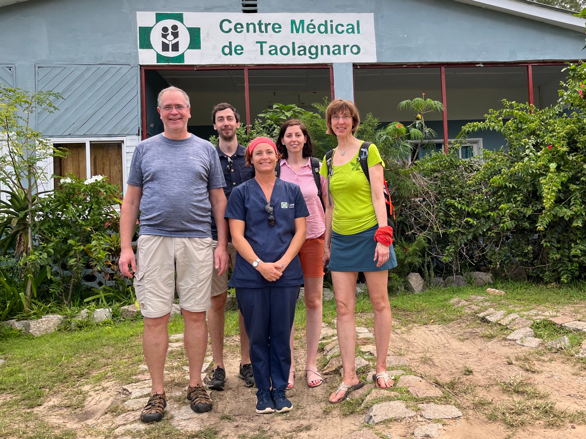
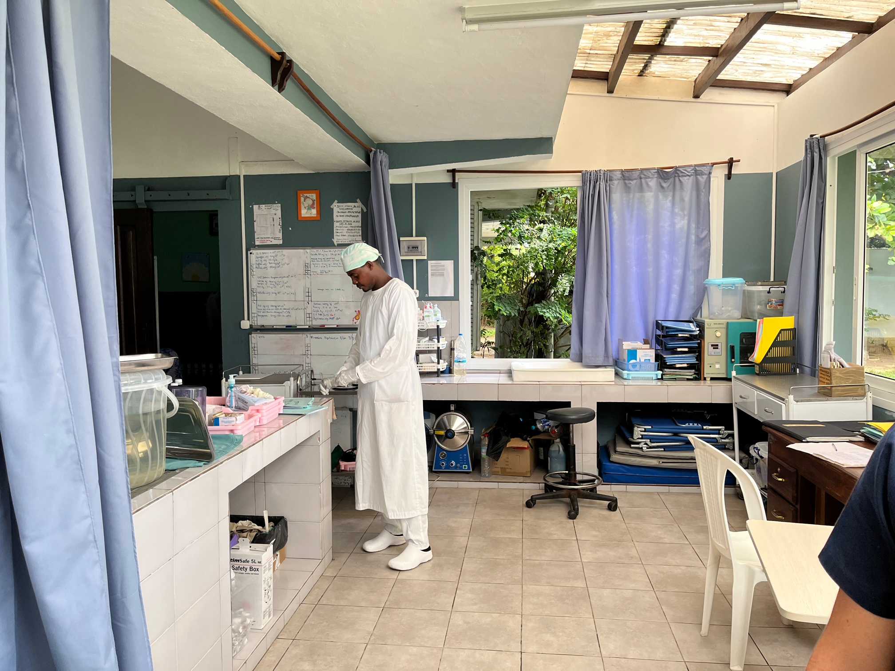
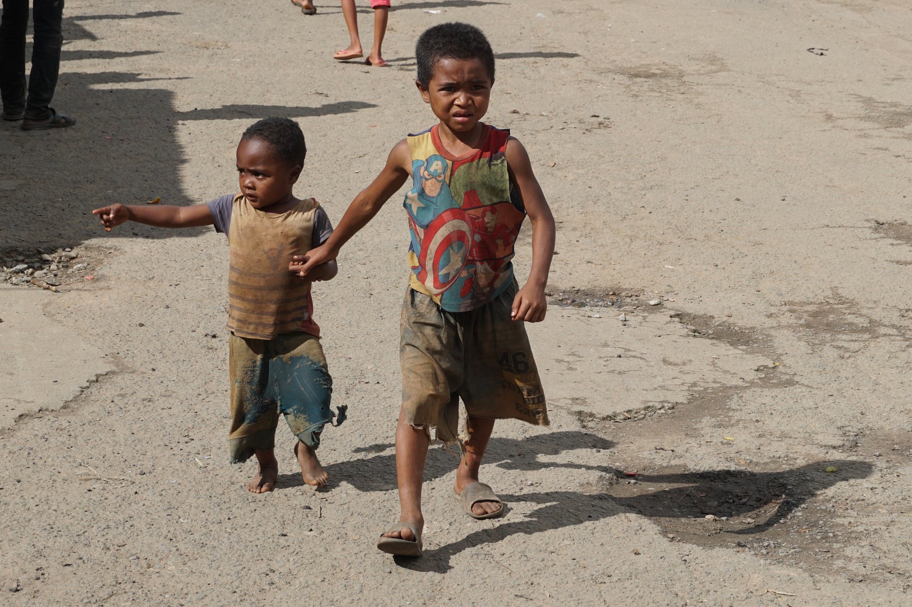
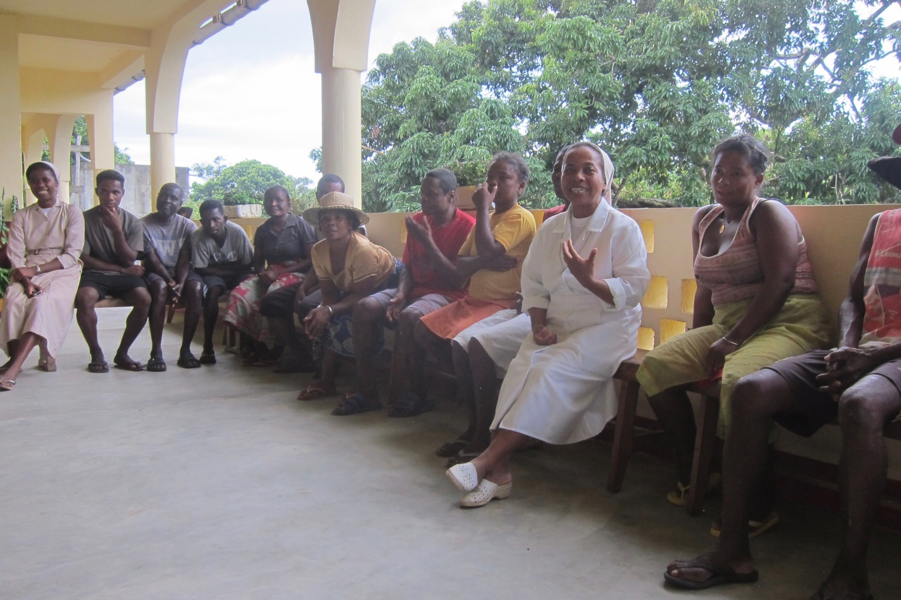
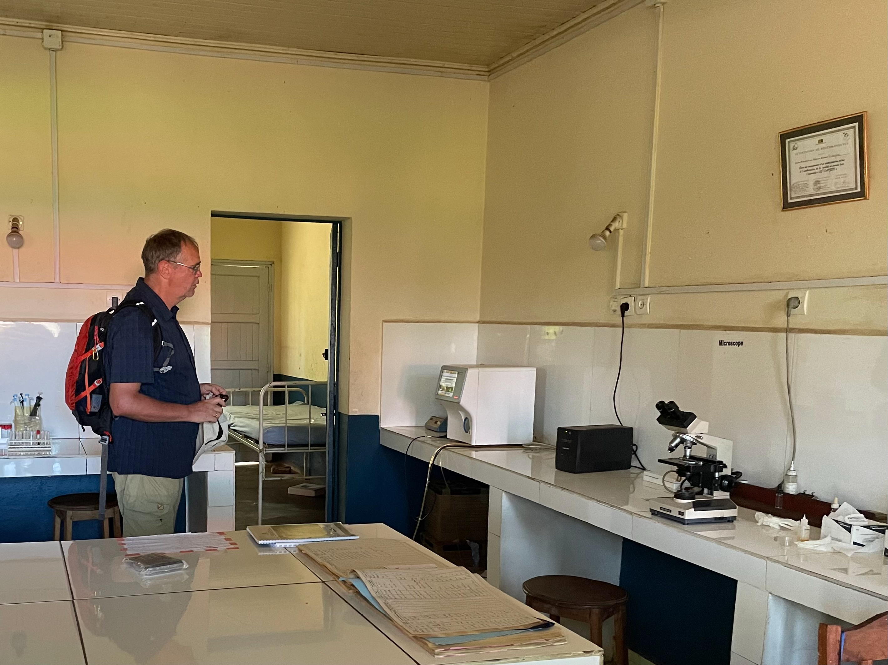
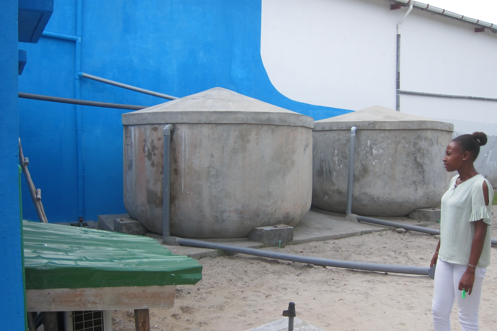
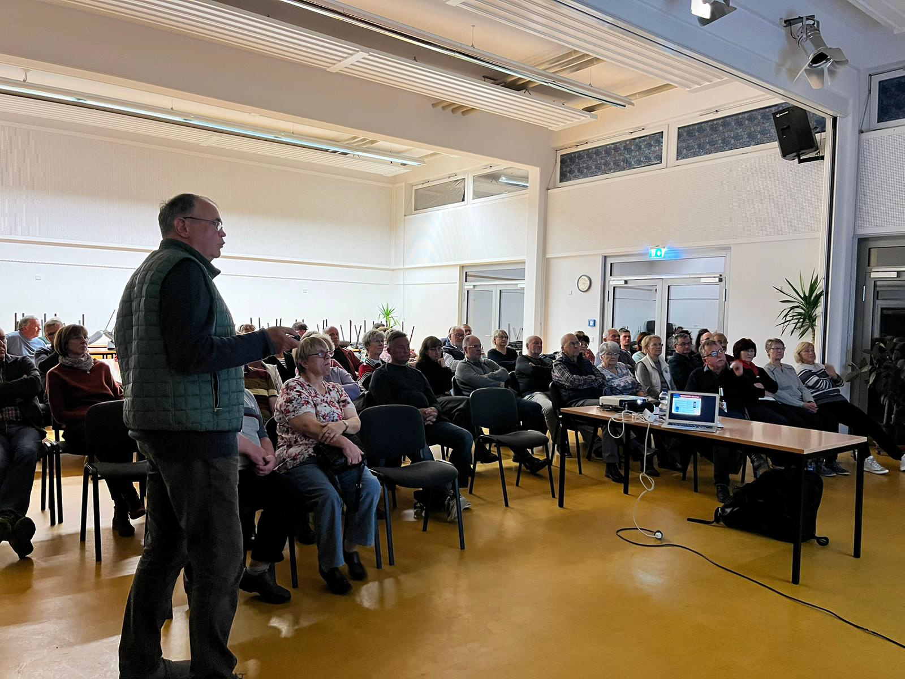
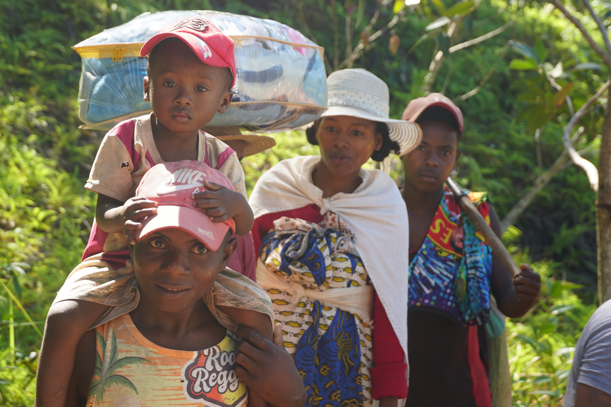

Jahresbericht 2023
Liebe Mitglieder des Vereins, liebe Helfer, Spender und Unterstützer!
Auch im Jahr 2023 gibt es doch einige erfolgreiche Projekte unseres Vereins, über die hier berichtet werden soll. Im Zentrum stand unser Besuch im März 2023 im
Centre Medical de Taolagnaro in Fort Dauphin
Zunächst bekamen wir von Dr. Jane Olivier die Klinik gezeigt. Die von uns finanzierten Umbauarbeiten waren abgeschlossen und das Ergebnis eindrucksvoll zu sehen. Mit viel Pragmatismus und Dank guter Handwerker wurde die Funktionalität der Klinik deutlich verbessert.


Für uns überraschend bat uns Dr. Jane, zunächst mit dem MMP keine neuen Projekte zu planen, da die Mietverhältnisse des Klinikgeländes aufgrund finanzieller Unwägbarkeiten des Vermieters zwischenzeitlich sehr unsicher waren. Inzwischen konnte Dr. Jane das Problem zu Gunsten ihrer Klinik aber lösen.
Reise durch den Süden Madagaskars

Unsere Reise durch den Süden von Madagaskar und entlang der Ostküste war wieder eine sehr ambivalente Erfahrung. Die Armut der Bevölkerung war unübersehbar, die Infrastruktur selbst mit viel Respekt vor den Problemen vor Ort eine Katastrophe. An den Widrigkeiten der Wege, der Flussüberquerungen oder fehlender Übernachtungsmöglichkeiten in der Provinz wären wir ohne die Hilfe der Einheimischen mehrfach gescheitert.
Besuch im Leprazentrum

Der Besuch in einem Behandlungszentrum für Leprakranke der Katholischen Kirche war eindrucksvoll. Hochmotiviertes Personal kümmert sich hier um stigmatisierte und in ihrem Lebensumfeld extrem ausgegrenzte Patienten, die besonderer Hilfe bedürfen.
Centre Hospitalier de Référence Régionale Farafangana

Nach unserem Besuch im Centre Hospitalier De Référence Régionale Farafangana an der Ostküste im Jahr 2018 besuchten wir die Klinik erneut. Erfreulich für uns war das große Klinikgelände sehr gepflegt. Solarmodule auf dem Dach und ein neuer Krankenwagen stand bereit. Der neue Klinikdirektor empfing uns wohlwollend, hatte aber an einer fachlichen oder materiellen Unterstützung kein Interesse. Mit großer Freude sahen wir im Labor der Klinik, dass unser gesponserstes Laborgerät nach 5 Jahren noch perfekt funktionierte.
TATIRANO-Trinkwasserprojekt Grundschule EPP Manambaro

Nach den sehr guten Erfahrungen im Jahr 2021 und 2022 bei der Zusammenarbeit mit Harry Chaplin und Tatirano Social Enterprise investierten wir im Juli und im November 2023 jeweils weitere 7000,- Euro für die Installation weiterer hybrider Regenwasser-Sammelsysteme für Trink- und Waschwasser. (siehe Bericht 2022)
Vortrag im Gemeindezentrum Großdrebnitz

Im November 2023 nutzten wir die Gelegenheit und berichteten im Gemeindezentrum von Großdrebnitz vor den Einwohnern und Mitgliedern des Heimatvereins unserer Gemeinde über unsere Reise und unser Projekt.
Gründung einer Hebammenpraxis
Im Dezember 2023 unterstützten wir die Gründung einer selbstständigen Hebammenpraxis von Sandrine Raveloarisoa, die wir noch aus der Clinique St. Luc in Tuléar kennen, mit dem Kauf wichtiger medizinischer Technik im Wert von 5000,- Euro.
Jahresabschluss und Dank
2023 konnten wir 19489,21 Euro an Spendeneinnahmen verbuchen. Das verdanken wir neben den Vereinsmitgliedern zahlreichen überzeugten Spendern. Dafür sagen wir allen Helfern des „Melzer-Madagaskar-Projekt e.V." herzlichen Dank.

Bitte helfen Sie auch weiterhin.
Aktuelle Infos, Spendenhinweise u. Fotos unter: www.melzer-madagaskar-projekt.de